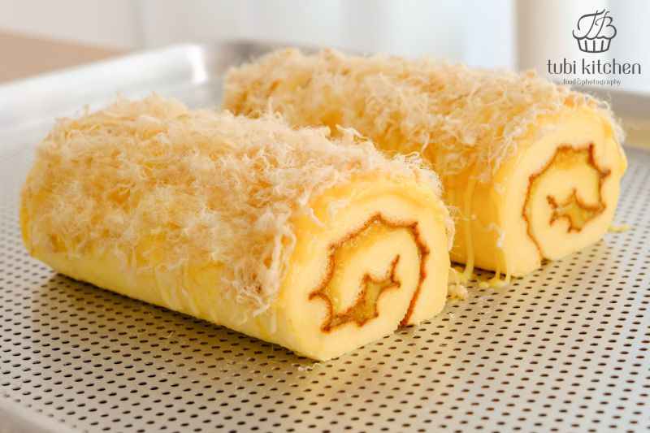
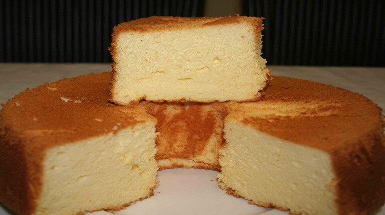

Những lỗi cơ bản trong làm bánh bông lan lý giải nguyên nhân và cách khắc phục
Bánh bông lan là loại bánh khá dễ làm và một trào lưu bánh hiện nay.Tuy nhiên, có những sai lầm thường gặp mà ngay những người đã có kinh nghiệm làm bánh đôi khi cũng mắc phải. Những lỗi thường gặp nhất ở bánh bông lan, và có thể nói rằng là căn bệnh chung của những dòng bánh như chiffon, gateau Hồng Kông, gateau Nhật Bản, sponge cake,… chính là bánh không nở hoặc kém nở, bánh xẹp và lõm đáy, bánh dính khuôn, nứt mặt, tanh mùi trứng…Yên tâm nhé, chỉ cần tham khảo những kinh nghiệm làm bánh bông lan dưới đây, bạn sẽ có thể tự tin tạo nên chiếc bánh ngon mềm đúng chuẩn ngay từ lần đầu tiên.
1. Bánh không nở hoặc kém nở ngay từ trong lò
Lý do: Đầu tiên bạn hãy nhớ rằng, bánh được nở và bông xốp chính là nhờ vào những bọt khí được tạo ra trong quá trình đánh bông lòng trắng trứng. Không phải nhờ vào bất kì loại bột nở nào. Chính vì vậy, có thể nói công đoạn đánh bông lòng trắng trứng là một công đoạn rất quan trọng trong việc quyết định độ nở của bánh. Có thể điểm qua những nguyên nhân liên quan đến việc bánh không nở như sau:
- Đánh trứng chưa đủ bông đến độ bông cần đạt được.
- Khi trộn bột cùng lòng trắng trứng đánh bông, bạn đã trộn quá mạnh tay hoặc chưa đúng kỹ thuật khiến bọt khí bị vỡ nhiều, nguyên nhân dẫn đến bánh không đủ bọt khí để nở.
- Sau khi trộn lòng trắng trứng đánh đông với hỗn hợp lỏng, bạn đã để chúng ở bên ngoài lâu mà không cho ngay vào lò nướng khiến bọt khí cũng vỡ dần.
- Nướng sai nhiệt độ.
Cách khắc phục:
+ Có một lưu ý quan trọng nếu bạn muốn đánh một mẻ lòng trắng trứng bông tuyệt hảo. Đó chính là que đánh trứng phải tuyệt đối sạch sẽ, không dính lòng đỏ trứng, dầu hay bơ.
+ Đánh lòng trắng trứng đạt tiêu chuẩn.
+ Kiểm tra lại nhiệt độ nướng bánh và luôn làm nóng lò trước ít nhất 15 phút.
+ Trộn bột nhẹ tay theo kỹ thuật fold, trộn nhẹ nhàng từ phía dưới lên trên. Tránh trộn bột mạnh tay, điều này sẽ khiến bọt khí bị vỡ. Mách nhỏ nhé, bạn hãy dùng 1/3 lượng lòng trắng trứng đánh bông trộn trước với hỗn hợp chất lõng để hỗn hợp này nhẹ nhàng, dễ hoà tan cùng 2/3 phần lòng trắng còn lại.
+ Hãy thực hiện khâu chống dính khuôn, lót giấy nến vào khuôn trước khi bắt đầu làm bánh. Hỗn hợp cuối cùng sau khi cho vào khuôn sẽ phải đem nướng ngay.
+ Một lưu ý khác, trong quá trình nướng, hạn chế mở cửa lò khiến nhiệt trong lò thoát ra bên ngoài. Tốt nhất bạn chỉ bên mở cửa lò để kiểm tra bánh khi đã qua khoảng 2/3 thời gian nướng.
2. Bánh bị xẹp, lõm mặt hoặc thắt eo khi mang ra khỏi lò
Lý do:đây là vấn đề của việc bánh chưa chín bên trong, khiến bánh phía trong còn ướt, khi mang bánh ra ngoài, lõi bánh sẽ co lại khiến bánh bị thắt eo như hình đồng hồ cát, lõm mặt đáy hoặc mặt trên của bánh khiến hình thức không được đẹp mặt và khi ăn, bánh sẽ ướt và có cảm giác sống.
Cách khắc phục:
Đây là một lỗi liên quan đến nhiệt độ và thời gian nướng bánh cũng như yêu cầu bạn phải hiểu lò nướng của chính mình. Nhiệt độ của mỗi lò nướng là khác nhau, tùy theo thương hiệu, cũng như tuổi thọ của lò nướng nhà mình. Nếu bánh của bạn có những dấu hiệu như bánh bị xẹp khi mang ra ngoài, lõm đáy và thắt eo thì hãy xem lại những vấn đề sau đây nhé!
+ Kiểm ta lại nhiệt độ nướng của bạn đã chính xác hay chưa.
+ Nếu đảm bảo rằng nhiệt độ của bạn đã chính xác, hãy nướng bánh thêm 10 đến 15 phút nữa.
+ Nhất là lò đã sử dụng qua một thời gian, lò nướng của bạn có thể sẽ bị lệch đi vài độ.
+ Một trường hợp khác chính là lấy bánh ra khỏi lò quá đột ngột. Khi đang nướng ở nhiệt độ cao, nếu đột ngột lấy bánh ra khỏi lò ngay, có thể khiến bánh bị “sốc nhiệt”. Phương án cho bạn chính là sau khi bánh chín, hãy mở hé cửa lò và để bánh trong lò thêm khoảng 10 phút trước khi đem bánh ra ngoài.
3. Bánh còn mùi tanh của trứng.
Lý do: Có hai lý do khiến cho bánh còn mùi tanh của trứng chính là bánh chưa chín hẳn hoặc bạn đã sử dụng vanilla chưa đủ để khử mùi tanh.
Cách khắc phục:
+ Nếu bánh chưa chín, bạn hãy cho bánh vào lò nướng thêm khoảng 5 đến 10 phút nữa cho bánh chín hẳn.
+ Cho thêm vanilla vào bánh. Nếu bạn sử dụng vanilla bột thay cho tinh chất vanilla thì chỉ nên sử dụng khoảng 1/3 hoặc 1/4 lượng tinh chất vanilla thôi, vì nếu sử dụng nhiều, bánh sẽ có vị đắng. Mách thêm bạn là hãy luôn chọn trứng mới và tươi khi làm bánh.
+ Nếu bạn đã cho một lượng vanilla thích hợp, đừng băn khoăn bởi vì mùi vani sẽ thơm hơn khi bánh nguội dần nhé.
4. Bánh bị tràn khỏi khuôn, nứt và cháy mặt
Lý do: Đây là một trong những lỗi khá cơ bản trong làm bánh. Giải thích cho việc bánh tràn khuôn chính là bạn cho quá nhiều bột, đổ bột cao trong khuôn khiến khi bánh nở sẽ không còn định hình trong khuôn mà nở tràn ra ngoài. Bánh nứt và cháy mặt vì nhiệt độ lò quá cao hoặc bạn đã để bánh quá gần lửa trên của lò, khiến bánh nở nhanh và mau cháy.
Cách khắc phục:
+ Hãy đảm bảo rằng bạn chỉ đổ bột khoảng 2/3 khuôn, chừa không gian cho bánh nở. Bạn sẽ có được một chiếc bánh cao vừa đủ và rất đầy đặn.
+ Do nhiệt độ nướng cao, làm bánh nở nhanh trong khi bánh còn chưa kịp định hình dạng.
+ Thanh nhiệt trên dưới không đều.
5. Bánh dính chặt vào khuôn, bể nát khi lấy ra
Lý do: Nếu bánh của bạn bị dính chặt vào khuôn, nguyên nhân chính đó là do bạn chống dính khuôn chưa tốt. Và nếu bánh bị dính khuôn, quá trình lấy bánh ra cũng rất khó khăn và sản phẩm sẽ không được đẹp vì bể và không thể nguyên khối.
Cách khắc phục:
+ Sử dụng giấy nến để lót chống dính khuôn
+ Nếu không sử dụng giấy nến, hãy quét chống dính thật kỹ. Quét kỹ ở đây muốn chỉ quét đều, dàn trải nhưng hãy quét mỏng thôi nhé.
+ Nến bánh của bạn chẳng may bị dính khuôn, đùng bối rối. Hãy cứ để bánh nguội và nhẹ nhàng cứu bánh ra từ từ nhé. Sẽ hiệu quả hơn khi bánh còn nóng đấy
6. Mứt, hạt, quả khô lặn hết xuống đáy bánh
Lý do:Nếu bạn là một người thích độ chua và mùi thơm của các loại trái cây khô tự nhiên trong bánh như nho khô, việt quất khô, hạnh nhân…thì chắc hẳn sẽ biết rằng, bánh sẽ rất ngon khi các loại quả khô dàn trãi khắp bánh và dễ dàng bắt gặp hương vị thơm ngon đó. Tuy nhiên, trong khâu làm bánh, rất hay mắc phải trường hợp trái cây lặn cả xuống dáy bánh khiến bánh mất ngon. Nguyên nhân chính là những loại trái cây này quá nặng hoặc bột lỏng khiến cho trái cây chìm hẳn xuống dưới.
Cách khắc phục:
+Hãy làm một bước sơ chế nhẹ trước khi cho trái cây vào bánh nhé. Hãy rửa sạch lớp đường ngoài trái cây và để ráo. Xốc trái cây với một ít bột trước khi nhẹ nhàng cho chúng vào hỗn hợp nhé!
TRÊN ĐÂY LÀ NHỮNG MẸO NHỎ GIÚP CÁC BẠN LÀM BÁNH BÔNG LAN NGON VÀ ĐẸP MẮT.
CẢM ƠN CÁC BẠN ĐÃ ĐỌC BÀI VIẾT CỦA CHÚNG TÔI.
* Welcom to Team Vit Bakery *

Tiệm bánh của chúng tôi luôn sẵn sàng phục vụ quý khách với những chiếc bánh đảm bảo chất lượng, ngon và đẹp mắt <3
* FEATURED DISK *
Một chiếc bánh kem socola kèm dâu tây ngon và đẹp mắt!
* REVIEWS *
"Cảm ơn các mẹo làm bánh của Team Vịt Bakery!!Bài viết này rất dễ hiểu"
Phạm Quỳnh
"Bài viết này rất hữu ích,nó đã giúp tôi có một chiếc bánh ưng ý!"
Trần Ân